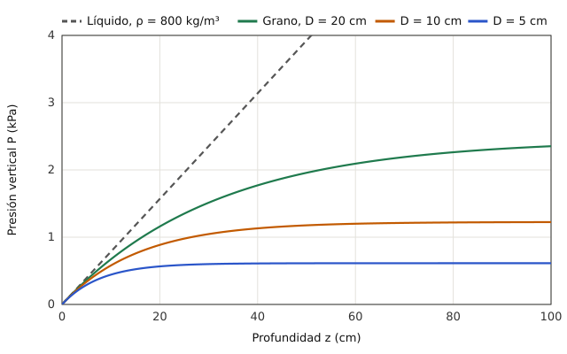
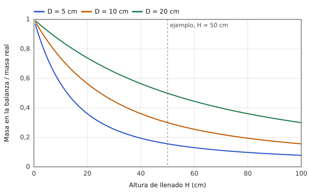
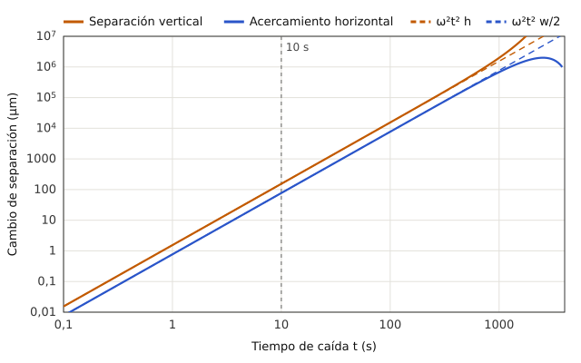
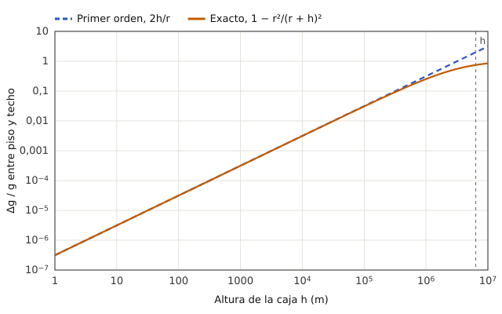

Preprint · documento de trabajo sin revisión por pares
Gravedad contenida: el efecto Janssen y las fuerzas de marea como respuestas a qué cambia la forma de un recipiente
Gravity in a box: the Janssen effect and tidal forces as answers to what the shape of a container changes
Bruno Loiacono · Estudiante de Física, Universidad de Buenos Aires · Noviembre de 2026
Resumen
¿La forma de un recipiente cambia cómo actúa la gravedad adentro? Este trabajo separa la pregunta en dos problemas que se pueden resolver con números. El primero es el del silo: en un tubo lleno de grano, la fricción con las paredes desvía parte del peso y la presión en el fondo se satura, según el modelo de Janssen de 1895. Para un tubo de 5 cm de diámetro con 50 cm de arroz, con parámetros de fricción supuestos, la balanza bajo el fondo registra 122,5 g de 785 g. El segundo es el de la caja cerrada: según el principio de equivalencia, una caja chica en caída libre no permite detectar la gravedad, pero el campo real no es uniforme y las fuerzas de marea la delatan. Para una caja de 1 m en la superficie terrestre, $g$ cambia $3{,}14\times10^{-7}$ de piso a techo, y en 10 s de caída dos bolas separadas 1 m se acercan 77 µm en horizontal y se separan 154 µm en vertical. Cada ecuación se deriva con unidades explícitas y se compara con mediciones publicadas. La conclusión es que el recipiente no cambia la gravedad de manera apreciable, pero sí cómo se reparte el peso y cuánto se nota que el campo no es uniforme.
Abstract
Does the shape of a container change how gravity acts inside it? This paper splits the question into two problems that can be solved with numbers. The first is the silo: in a tube filled with grain, friction against the walls diverts part of the weight and the pressure at the bottom saturates, following Janssen's 1895 model. For a 5 cm wide tube holding 50 cm of rice, with assumed friction parameters, a scale under the bottom reads 122.5 g out of 785 g. The second is the closed box: by the equivalence principle, a small freely falling box cannot detect gravity, but the real field is not uniform and tidal forces give it away. For a 1 m box at the Earth's surface, $g$ changes by $3.14\times10^{-7}$ from floor to ceiling, and in 10 s of free fall two balls 1 m apart approach by 77 µm horizontally and separate by 154 µm vertically. Every equation is derived with explicit units and compared with published measurements. The conclusion is that the container does not change gravity appreciably, but it does change how weight is distributed and how much the non-uniformity of the field can be noticed.
Palabras clave: efecto Janssen; medios granulares; principio de equivalencia; fuerzas de marea; período de Schuler.
Keywords: Janssen effect; granular media; equivalence principle; tidal forces; Schuler period.
1. Introducción
La idea que da origen a este trabajo tenía forma de intuición: en un espacio alto y angosto, ¿la gravedad «se siente» distinta?, ¿el recipiente cambia algo de cómo actúa? La pregunta mezcla tres planos: la percepción, es decir, cómo se siente un ambiente; la física de los materiales, o cómo se reparte el peso de algo contenido; y la física del campo gravitatorio, o si el campo depende del recipiente. Para avanzar hay que separarlos. Este trabajo se ocupa de los dos que la física puede contestar con números:
- ¿La forma del recipiente cambia la gravedad sobre lo que hay adentro? No, salvo correcciones minúsculas por la propia masa del recipiente. Pero sí cambia cómo se reparte el peso cuando el contenido no es un fluido. Es el problema del silo.
- ¿Se puede notar, desde adentro de un recipiente cerrado, que hay gravedad? Si la caja es chica, no: la gravedad uniforme no se distingue de una aceleración. Pero el campo real nunca es uniforme, y las mareas lo delatan. Es el problema de la caja.
La sección 2 resume la física y la historia de los dos problemas. La sección 3 deriva las ecuaciones con unidades explícitas. La sección 4 las aplica a un tubo de arroz y a una caja de 1 m, y compara los órdenes de magnitud con mediciones publicadas. La sección 5 discute los límites de los dos modelos y la parte de la pregunta que la física no contesta.
2. Antecedentes
2.1. La paradoja hidrostática
En un fluido en reposo la presión es isótropa y solo crece con la profundidad: la fuerza sobre el fondo de un recipiente depende de la altura de la columna y del área del fondo, no de la cantidad de líquido ni de la forma de las paredes. Es la llamada paradoja hidrostática, conocida desde Simon Stevin (1586) y sistematizada por Blaise Pascal. En un líquido, entonces, la forma del recipiente no cambia lo que mide una balanza bajo el fondo si el recipiente es un tubo recto: la balanza ve todo el peso.
2.2. Por qué un grano no es un líquido
Un material granular, como arena, arroz o café molido, es un conjunto de partículas sólidas que se tocan y se rozan. A diferencia de un fluido, puede sostener tensiones de corte en reposo: una pila de arena tiene un ángulo de reposo y un vaso de agua no. Desde Coulomb, la resistencia al corte de un suelo se modela con una ley de fricción en la que la tensión tangencial máxima es proporcional a la normal. Rankine (1857) estudió la relación entre la presión horizontal y la vertical en un terreno granular; en un fluido ese cociente vale 1 y en un grano es menor, y depende del ángulo de fricción interna (ecuación \eqref{eq:rankine}). Reynolds (1885) mostró que un medio granular compacto, para deformarse, tiene que expandirse: la dilatancia, una señal de que el comportamiento del grano depende de su historia de compactación.
Las fuerzas dentro de un grano no se reparten de manera pareja. Las mediciones con discos fotoelásticos de Majmudar y Behringer (2005) muestran que viajan por cadenas de fuerza, caminos de granos muy cargados rodeados de granos casi libres. La revisión de Jaeger et al. (1996) resume por qué un medio granular se comporta como sólido, líquido o gas según cómo se lo exija, sin ser ninguno de los tres.
2.3. Janssen, 1895
H. A. Janssen, un ingeniero alemán que construía silos, llenó modelos de silo con maíz y midió la presión en el fondo con un fondo móvil apoyado en una balanza. Encontró que la presión no crecía linealmente con la altura sino que se saturaba, y propuso el modelo de la sección 3.1. Sperl (2006) tradujo el artículo al inglés y lo comentó. Vanel y Clément (1999) repitieron la medición con mucho cuidado y encontraron que el modelo describe bien el promedio, pero que las fluctuaciones de un llenado a otro son grandes y dependen del procedimiento. Los textos de Nedderman (1992) y Duran (2000) desarrollan el modelo y sus correcciones.
La saturación tiene una consecuencia cotidiana: el caudal de grano por un orificio casi no depende de la altura de la columna. Beverloo et al. (1961) midieron que crece con el diámetro del orificio a la potencia $5/2$ y no con la altura, a diferencia de un líquido, cuyo caudal baja a medida que baja el nivel. Por eso los relojes de arena se hacen con arena.
2.4. El principio de equivalencia
Galilei (1638) defendió que todos los cuerpos caen con la misma aceleración en el vacío, cualquiera sea su masa o su composición, y Newton (1687) lo incorporó como la igualdad entre masa inercial y masa gravitatoria. La misión satelital MICROSCOPE confirmó esa igualdad con una precisión del orden de $10^{-15}$ en el cociente de Eötvös (Touboul et al. 2022).
En 1907, Einstein convirtió ese hecho en el principio de equivalencia: un observador encerrado en una caja que acelera uniformemente no puede distinguir, con ningún experimento local, esa situación de estar en reposo en un campo gravitatorio uniforme; y un observador en una caja en caída libre no siente gravedad. En 1911 usó el principio para predecir que la luz se curva al pasar cerca del Sol y que los relojes marchan más lento más abajo en un campo gravitatorio (Einstein 1911). La palabra clave es uniforme. El campo de la Tierra apunta hacia el centro y se debilita con la distancia, así que el principio vale solo en una región chica y durante un tiempo corto. Como insisten Misner et al. (1973), la gravedad que no se puede eliminar eligiendo un sistema en caída libre es la marea; en relatividad general, la curvatura del espacio-tiempo.
2.5. Mareas en el mar y en el cielo
Las fuerzas que acercan y separan dos objetos en caída libre son las mismas que levantan el mar. Newton (1687) explicó por qué hay dos pleamares por día: la Luna atrae más al océano del lado cercano que al centro de la Tierra, y más al centro que al océano del lado lejano, de modo que se forman dos bultos opuestos. Darwin (1898) desarrolló la teoría de las mareas y su efecto sobre la rotación de la Tierra. Si un cuerpo está sostenido solo por su propia gravedad, la marea puede romperlo: Asphaug y Benz (1994) usaron la ruptura del cometa Shoemaker–Levy 9 al pasar cerca de Júpiter para mostrar que era un conjunto de rocas sueltas, otra vez un medio granular sometido a gravedad. Cerca de un agujero negro la marea estira radialmente y comprime lateralmente a lo que cae, la «espaguetización» que populariza Thorne (1994).
2.6. Medir diferencias de gravedad
Las diferencias de $g$ dentro de una habitación ya se miden. Pound y Rebka (1960) midieron en una torre de 22,5 m el corrimiento gravitatorio de la frecuencia de rayos gamma que predijo Einstein. Chou et al. (2010) detectaron con relojes ópticos la diferencia de ritmo entre dos relojes separados 33 cm en altura. Peters et al. (1999) midieron $g$ dejando caer átomos enfriados con láser en un interferómetro atómico. En órbita, las misiones GRACE (Tapley et al. 2004) y GOCE (Drinkwater et al. 2003) miden, respectivamente, la distancia entre dos satélites en caída libre y la diferencia de aceleración entre acelerómetros dentro de un mismo satélite: son la caja de este trabajo llevada a escala planetaria.
3. Modelo
Todas las magnitudes están en unidades SI. La tabla 1 resume la notación. En cada ecuación se indica el chequeo de unidades.
| Símbolo | Unidad | Significado |
|---|---|---|
| $\rho$ | $\mathrm{kg\,m^{-3}}$ | densidad aparente del grano (incluye los huecos) |
| $g$ | $\mathrm{m\,s^{-2}}$ | aceleración de la gravedad |
| $D$, $A$ | m, m$^2$ | diámetro y área del tubo, $A = \pi D^2/4$ |
| $z$, $H$ | m | profundidad desde la superficie libre y altura de llenado |
| $P$ | Pa | presión vertical media en una sección |
| $\mu$, $K$ | — | coeficiente de fricción con la pared y cociente entre presión horizontal y vertical |
| $\lambda$ | m | longitud de saturación |
| $GM$ | $\mathrm{m^3\,s^{-2}}$ | parámetro gravitatorio de la Tierra |
| $r$ | m | distancia al centro de la Tierra |
| $\omega$ | $\mathrm{s^{-1}}$ | frecuencia de marea, $\omega^2 = GM/r^3$ |
| $h$, $w$ | m | separación vertical y horizontal inicial de dos bolas |
| $\xi$ | m | vector de separación entre dos bolas |
3.1. El silo
Se piensa el tubo como una pila de rebanadas horizontales de espesor $\mathrm{d}z$, con $z$ medida hacia abajo desde la superficie libre. Sobre una rebanada actúan su peso, $\rho g A\,\mathrm{d}z$; la diferencia de presión vertical entre sus caras, $A\,\mathrm{d}P$; y la fricción con la pared. La presión horizontal contra la pared es $KP$, y si la fricción está completamente movilizada, la ley de Coulomb da una fuerza hacia arriba $\mu K P$ por unidad de área de pared, sobre un área $\pi D\,\mathrm{d}z$. El equilibrio vertical es
Cada término es una fuerza: $\mathrm{Pa\cdot m^2} = \mathrm{N}$ y $\mathrm{kg\,m^{-3}\cdot m\,s^{-2}\cdot m^2\cdot m} = \mathrm{N}$. Dividiendo por $A\,\mathrm{d}z$,
donde $\lambda$ tiene unidades de longitud porque $\mu$ y $K$ son adimensionales, y los dos términos de la derecha tienen unidades de $\mathrm{Pa\,m^{-1}}$. Con $P(0) = 0$, la solución es
Para $z \ll \lambda$, $P \approx \rho g z$: cerca de la superficie el grano se comporta como un líquido. Para $z \gg \lambda$, $P \to \rho g \lambda$: el fondo «ve» una columna de altura $\lambda$, por más alto que sea el silo. Si el tubo se apoya aparte y el fondo descansa sobre una balanza, la balanza marca la masa
en kg ($\mathrm{kg\,m^{-3}\cdot m\cdot m^2}$), frente a la masa real $m = \rho A H$. Su cociente, $m_{\mathrm{b}}/m = (\lambda/H)(1 - e^{-H/\lambda})$, depende solo de $H/\lambda$. El resto del peso lo sostienen las paredes: el efecto Janssen redistribuye el peso, no lo hace desaparecer.
Para el coeficiente $K$, la teoría de Rankine (1857) da en el estado activo
adimensional, con $\varphi$ el ángulo de fricción interna. Para $\varphi = 30^\circ$, $K = 1/3$.
3.2. La caja
El campo de la Tierra es $\mathbf{g}(\mathbf{r}) = -GM\,\mathbf{r}/r^3 = -\nabla\Phi$, con $\Phi = -GM/r$. Si dos partículas en caída libre están en $\mathbf{r}$ y $\mathbf{r} + \boldsymbol{\xi}$, con $|\boldsymbol{\xi}| \ll r$, la diferencia de sus aceleraciones es, a primer orden,
En un sistema local con el eje $z$ apuntando radialmente hacia afuera, las derivadas segundas de $\Phi$ dan
Las unidades cierran: $GM/r^3$ tiene unidades de $\mathrm{m^3\,s^{-2}/m^3} = \mathrm{s^{-2}}$, y $\omega^2\xi$, de aceleración. Las direcciones horizontales se comprimen y la vertical se estira el doble; la suma de los coeficientes, $-1-1+2 = 0$, es la ecuación de Laplace, $\nabla^2\Phi = 0$, fuera de las masas.
Si dos bolas parten en reposo relativo, separadas $w$ en horizontal o $h$ en vertical, las soluciones de \eqref{eq:componentes} son
El acercamiento horizontal es $w\,(1 - \cos\omega t)$ y la separación vertical extra, $h\,[\cosh(\sqrt2\,\omega t) - 1]$. Para $\omega t \ll 1$ valen $\tfrac12 \omega^2 t^2 w$ y $\omega^2 t^2 h$: con $w = h$, la separación vertical es el doble del acercamiento horizontal, otra forma de ver que la traza es cero. Las fórmulas suponen que la caja cae sin rotar respecto de la dirección radial y valen mientras $\omega t \ll 1$.
La diferencia de $g$ entre el piso, a distancia $r$, y el techo, a $r + h$, es
adimensional, y el gradiente vertical, $|\partial g/\partial r| = 2GM/r^3 = 2\omega^2$, tiene unidades de $\mathrm{s^{-2}}$. La frecuencia $\omega$ define un período,
en segundos. Es el período de Schuler, por el ingeniero Max Schuler, que en 1923 mostró que un péndulo de largo igual al radio terrestre no sería perturbado por las aceleraciones del vehículo que lo lleva. Es también el período de una órbita rasante.
3.3. La misma cuenta en relatividad general
En relatividad general, la separación $\xi^\mu$ entre dos geodésicas vecinas obedece la ecuación de desvío geodésico,
con $R^\mu{}_{\nu\rho\sigma}$ el tensor de Riemann y $u^\nu$ la cuadrivelocidad. En unidades con $c = 1$, en el límite de campo débil y velocidades bajas, $R^i{}_{0j0} = \partial_i\partial_j\Phi$ y \eqref{eq:desvio} se reduce a \eqref{eq:marea} (Schutz 2009). Las fórmulas newtonianas de la caja calculan, entonces, la manifestación de baja velocidad de la curvatura del espacio-tiempo.
3.4. La masa del recipiente
El recipiente también atrae. Dentro de una cáscara esférica uniforme el campo de la cáscara es nulo, por el teorema de la cáscara de Newton (1687), pero dentro de un tubo no. En el centro de uno de los extremos de una cáscara cilíndrica de radio $a$, largo $L$ y densidad superficial $\sigma$, sumando los anillos de masa $2\pi a\sigma\,\mathrm{d}z$ a distancia axial $z$, el campo axial es
con unidades $\mathrm{m^3\,kg^{-1}\,s^{-2}\cdot kg\,m^{-2}\cdot m\cdot m^{-1}} = \mathrm{m\,s^{-2}}$.
4. Resultados
Todas las cifras de esta sección salen de paper/figuras/generar.js. Las constantes son las de la NASA para la Tierra y la Luna (Williams 2024; Williams 2024), $GM = 3{,}986\times10^{14}\unid{m^3\,s^{-2}}$ y $r = 6{,}371\times10^{6}\unid{m}$, y el valor de CODATA para $G$ (Standards y Technology 2024). Los parámetros del arroz, $\rho = 800\unid{kg\,m^{-3}}$, $\mu = 0{,}4$ y $K = 0{,}4$, son supuestos típicos, no mediciones: dependen del grano, del tubo, de la humedad y de cómo se llena.
4.1. Un tubo de arroz
Un tubo de $D = 5\unid{cm}$ lleno hasta $H = 50\unid{cm}$ tiene un área de $1{,}963\times10^{-3}\unid{m^2}$ y contiene 785 g de arroz. La longitud de saturación es $\lambda = 0{,}05/0{,}64\unid{m} = 7{,}81\unid{cm}$, así que $H/\lambda = 6{,}4$ y el factor $1 - e^{-H/\lambda}$ vale 0,998: el fondo está saturado. La balanza marca $m_{\mathrm{b}} = 122{,}5\unid{g}$. Las paredes sostienen el 84,4 % del peso. La presión en el fondo es $\rho g \lambda = 613\unid{Pa}$, frente a los 3924 Pa que habría bajo 50 cm de un líquido de la misma densidad (figura 1).
Con un tubo de 20 cm, $\lambda = 31{,}25\unid{cm}$ y la balanza marca 6,27 kg de 12,57 kg: cuanto más ancho el tubo, menos pared por unidad de volumen y menos peso desviado (figura 2).


4.2. Una caja de 1 m
En la superficie, $g = GM/r^2 = 9{,}82\unid{m\,s^{-2}}$ y $\omega^2 = 1{,}54\times10^{-6}\unid{s^{-2}}$, así que $\omega = 1{,}24\times10^{-3}\unid{s^{-1}}$ y el período de Schuler es de 84,35 min. Entre el piso y el techo de una caja de 1 m, $\Delta g/g = 3{,}14\times10^{-7}$. Después de 10 s de caída libre, dos bolas separadas 1 m en horizontal se acercan 77,07 µm, y dos separadas 1 m en vertical se alejan 154,1 µm: el doble, como predice la traza nula (figura 3).
A 400 km de altura, la altitud típica de la Estación Espacial Internacional, $g$ todavía vale $8{,}69\unid{m\,s^{-2}}$ y la marea es un 17 % más débil: el acercamiento en 10 s baja a 64,2 µm. La «ingravidez» de los astronautas no es ausencia de gravedad sino caída libre; lo que queda es la marea residual.

4.3. Cuándo la forma de la caja sí importa
La tabla 2 y la figura 4 comparan la aproximación de primer orden de la ecuación \eqref{eq:dg} con el valor exacto. Hasta unos 10 km la diferencia es menor que el 1 %; para una caja de 1000 km, la aproximación da 0,314 y el valor exacto 0,253. A esas escalas la forma de la caja importa de verdad: una caja alta y angosta ve un campo que cambia mucho a lo largo, y una chata y ancha ve sobre todo la convergencia lateral.
| Altura $h$ | $2h/r$ | $1 - r^2/(r+h)^2$ |
|---|---|---|
| 1 m | $3{,}14\times10^{-7}$ | $3{,}14\times10^{-7}$ |
| 100 m | $3{,}14\times10^{-5}$ | $3{,}14\times10^{-5}$ |
| 10 km | $3{,}14\times10^{-3}$ | $3{,}13\times10^{-3}$ |
| 1000 km | 0,314 | 0,253 |

4.4. Órdenes de magnitud
Las mismas fórmulas ponen en escala varias mediciones:
- El gradiente vertical en la superficie es $2\omega^2 = 3{,}08\times10^{-6}\unid{s^{-2}}$, unos 3083 eötvös ($1\unid{E} = 10^{-9}\unid{s^{-2}}$). Es lo que miden, componente por componente, los gradiómetros de GOCE.
- La aceleración de marea que produce la Luna en la superficie terrestre, $2 G M_{\mathrm{L}} r / d^3$ con $M_{\mathrm{L}} = 7{,}346\times10^{22}\unid{kg}$ y $d = 3{,}844\times10^{8}\unid{m}$, es $1{,}1\times10^{-6}\unid{m\,s^{-2}}$, unas diez millonésimas de $g$: el mismo orden que la diferencia entre el piso y el techo de una caja de 3 m.
- En la torre de 22,5 m de Pound y Rebka, el corrimiento relativo de frecuencia esperado es $gh/c^2 = 2{,}46\times10^{-15}$.
- Para un silo de hormigón de radio $a = 3\unid{m}$, largo $L = 20\unid{m}$ y paredes de 20 cm con densidad supuesta de $2400\unid{kg\,m^{-3}}$, la ecuación \eqref{eq:cascara} da $g_{\mathrm{p}} = 1{,}7\times10^{-7}\unid{m\,s^{-2}}$, unas $2\times10^{-8}\,g$. Es el sentido literal en que el recipiente cambia la gravedad adentro: no se siente, aunque un gravímetro como el de Peters et al. (1999) podría registrarlo. Cavendish (1798) necesitó una balanza de torsión para medir atracciones de ese orden entre esferas de plomo.
5. Discusión y limitaciones
5.1. Qué dicen los dos modelos
La curva del silo no dice que la gravedad sea menor dentro del tubo: cada grano pesa lo mismo. Dice por dónde baja el peso, y una parte va a las paredes por fricción. Si el tubo colgara de un dinamómetro, ese dinamómetro registraría lo que falta en la balanza. En un fluido, por viscoso que sea, la presión en reposo es isótropa y no hay esfuerzos de corte: la miel tarda en acomodarse, pero después la balanza marca todo su peso. La saturación es propia de los materiales con fricción interna.
Los números de la caja tampoco dicen que la no uniformidad del campo sea perceptible en una habitación: son micrómetros en diez segundos. Sirven para ver de qué orden es el efecto y a partir de qué tamaño domina. Las dos bolas no se acercan porque se atraigan entre sí (la atracción entre dos masas de 1 kg a 1 m es de unos $7\times10^{-11}\unid{N}$): se acercan porque cada una cae hacia el centro de la Tierra por su propia línea, y las líneas convergen.
5.2. Límites del modelo de Janssen
El modelo supone presión uniforme en cada sección, $K$ constante y fricción completamente movilizada contra las paredes. Ninguna de las tres se cumple siempre: la presión es mayor en el centro que contra la pared, $K$ depende de la compactación y, si el grano no deslizó contra las paredes, la fricción es menor que $\mu K P$ y la saturación más débil. Vanel y Clément (1999) muestran que el modelo describe el promedio de muchos llenados, no uno en particular. Además, el modelo es estático: al vaciar un silo aparecen sobrepresiones, arcos y flujo de embudo, que requieren otra teoría (Nedderman 1992). Por último, los valores de $\mu$ y $K$ usados aquí son supuestos; las cifras de la sección 4 muestran el orden del efecto, no una predicción para un arroz y un tubo concretos.
5.3. Límites de las fórmulas de marea
Las ecuaciones \eqref{eq:componentes} y \eqref{eq:soluciones} son de primer orden en $\xi/r$ y suponen una caja que cae sin rotar respecto de la dirección radial. Valen para $\omega t \ll 1$ y para cajas chicas frente al radio terrestre; la tabla 2 muestra dónde empieza a fallar la aproximación lineal. Tampoco incluyen el achatamiento de la Tierra ni las variaciones locales de densidad, que son justamente lo que buscan medir GRACE y GOCE.
5.4. La forma del recipiente en un grano que se mueve
En un grano vibrado, la forma del recipiente y la fricción con sus paredes sí cambian lo que pasa adentro. Si se sacude un frasco de frutos secos, las nueces grandes terminan arriba. Rosato et al. (1987) lo explicaron por los huecos que se abren al sacudir, en los que caben las partículas chicas y no las grandes; Knight et al. (1993) mostraron que en recipientes reales la vibración genera corrientes de convección que suben por el centro y bajan pegadas a las paredes, donde las partículas grandes no caben. Es otra respuesta afirmativa, para un medio granular, a la pregunta de si la forma del recipiente cambia lo que pasa adentro.
5.5. La parte que la física no contesta
La idea original también preguntaba cómo se siente un espacio alto o angosto. Eso no es física del campo sino psicología de la percepción. Gibson (1979) sostuvo que percibimos el espacio a partir de la información del entorno, como los gradientes de textura y el horizonte. Witkin y Asch (1948) mostraron que un marco visual inclinado desvía el juicio de la vertical. En la percepción de la vertical intervienen los otolitos del oído interno, que son acelerómetros y, como tales, no distinguen gravedad de aceleración: el principio de equivalencia en biología. Un recipiente puede cambiar, entonces, lo que creemos que hace la gravedad, aunque no cambie lo que hace.
6. Conclusiones y trabajo futuro
La intuición de que el recipiente cambia la gravedad es falsa en sentido literal, salvo por correcciones del orden de $10^{-8}\,g$, y verdadera en dos sentidos más interesantes. En un silo, la forma del recipiente decide cuánto del peso del grano llega al fondo: con 50 cm de arroz en un tubo de 5 cm, la balanza registra menos de una sexta parte del peso. En una caja cerrada, el tamaño decide si se puede detectar la gravedad desde adentro: una caja de 1 m registra diferencias de $g$ de tres partes en diez millones, y a partir de cientos de kilómetros la forma de la caja domina.
El paso siguiente es empírico. Se propone un experimento casero: un tubo rígido de 4 a 5 cm de diámetro, sostenido aparte; un disco suelto como fondo, apoyado en una balanza de cocina; y arroz agregado de a 100 g, anotando la lectura en cada paso. Ajustando $\mu K$ para que la ecuación \eqref{eq:balanza} siga los puntos se obtiene una medición propia de $\lambda$, que se puede comparar con las fluctuaciones que encontraron Vanel y Clément (1999). Una segunda extensión es un experimento de percepción de la vertical en espacios de distintas proporciones.
Declaración de uso de IA
Este trabajo se redactó con asistencia de Claude (Anthropic), un modelo de lenguaje, a partir de una guía previa del autor. El modelo propuso la estructura, la redacción, los chequeos de unidades y el script que genera las figuras; el alcance y las decisiones son del autor, que es responsable del contenido. Las referencias se verificaron contra Crossref, Open Library y las páginas citadas con paper/verificar_bib.py, y todas las cifras de la sección 4 salen de paper/figuras/generar.js.
Referencias
- Asphaug, E. y Benz, W. (1994). Density of comet Shoemaker–Levy 9 deduced by modelling breakup of the parent 'rubble pile'. Nature, 370(6485), 120–124. https://doi.org/10.1038/370120a0
- Beverloo, W. A., Leniger, H. A. y van de Velde, J. (1961). The flow of granular solids through orifices. Chemical Engineering Science, 15(3–4), 260–269. https://doi.org/10.1016/0009-2509(61)85030-6
- Cavendish, H. (1798). Experiments to determine the density of the earth. Philosophical Transactions of the Royal Society of London, 88, 469–526. https://doi.org/10.1098/rstl.1798.0022
- Chou, C. W., Hume, D. B., Rosenband, T. y Wineland, D. J. (2010). Optical clocks and relativity. Science, 329(5999), 1630–1633. https://doi.org/10.1126/science.1192720
- Darwin, G. H. (1898). The Tides and Kindred Phenomena in the Solar System. Houghton, Mifflin. https://openlibrary.org/works/OL10437990W
- Drinkwater, M. R., Floberghagen, R., Haagmans, R., Muzi, D. y Popescu, A. (2003). GOCE: ESA's first Earth Explorer Core mission. Space Science Reviews, 108(1–2), 419–432. https://doi.org/10.1023/A:1026104216284
- Duran, J. (2000). Sands, Powders, and Grains: An Introduction to the Physics of Granular Materials. Springer. https://openlibrary.org/works/OL1931030W
- Einstein, A. (1911). Über den Einfluß der Schwerkraft auf die Ausbreitung des Lichtes. Annalen der Physik, 340(10), 898–908. https://doi.org/10.1002/andp.19113401005
- Galilei, G. (1638). Discorsi e dimostrazioni matematiche intorno a due nuove scienze. Elsevier. https://openlibrary.org/works/OL15231447W
- Gibson, J. J. (1979). The Ecological Approach to Visual Perception. Houghton Mifflin. https://openlibrary.org/works/OL5589051W
- Jaeger, H. M., Nagel, S. R. y Behringer, R. P. (1996). Granular solids, liquids, and gases. Reviews of Modern Physics, 68(4), 1259–1273. https://doi.org/10.1103/RevModPhys.68.1259
- Knight, J. B., Jaeger, H. M. y Nagel, S. R. (1993). Vibration-induced size separation in granular media: The convection connection. Physical Review Letters, 70(24), 3728–3731. https://doi.org/10.1103/PhysRevLett.70.3728
- Majmudar, T. S. y Behringer, R. P. (2005). Contact force measurements and stress-induced anisotropy in granular materials. Nature, 435(7045), 1079–1082. https://doi.org/10.1038/nature03805
- Misner, C. W., Thorne, K. S. y Wheeler, J. A. (1973). Gravitation. W. H. Freeman. https://openlibrary.org/works/OL4461077W
- Nedderman, R. M. (1992). Statics and Kinematics of Granular Materials. Cambridge University Press. https://openlibrary.org/works/OL4116660W
- Newton, I. (1687). Philosophiæ Naturalis Principia Mathematica. Royal Society. https://openlibrary.org/works/OL104736W
- Peters, A., Chung, K. Y. y Chu, S. (1999). Measurement of gravitational acceleration by dropping atoms. Nature, 400(6747), 849–852. https://doi.org/10.1038/23655
- Pound, R. V. y Rebka, G. A. (1960). Apparent weight of photons. Physical Review Letters, 4(7), 337–341. https://doi.org/10.1103/PhysRevLett.4.337
- Rankine, W. J. M. (1857). On the stability of loose earth. Philosophical Transactions of the Royal Society of London, 147, 9–27. https://doi.org/10.1098/rstl.1857.0003
- Reynolds, O. (1885). On the dilatancy of media composed of rigid particles in contact. The London, Edinburgh, and Dublin Philosophical Magazine and Journal of Science, 20(127), 469–481. https://doi.org/10.1080/14786448508627791
- Rosato, A., Strandburg, K. J., Prinz, F. y Swendsen, R. H. (1987). Why the Brazil nuts are on top: Size segregation of particulate matter by shaking. Physical Review Letters, 58(10), 1038–1040. https://doi.org/10.1103/PhysRevLett.58.1038
- Schutz, B. (2009). A First Course in General Relativity. Cambridge University Press. https://doi.org/10.1017/CBO9780511984181
- Sperl, M. (2006). Experiments on corn pressure in silo cells – translation and comment of Janssen's paper from 1895. Granular Matter, 8(2), 59–65. https://doi.org/10.1007/s10035-005-0224-z
- Standards, N. I. o. y Technology (2024). CODATA value: Newtonian constant of gravitation. https://physics.nist.gov/cgi-bin/cuu/Value?bg
- Tapley, B. D., Bettadpur, S., Watkins, M. y Reigber, C. (2004). The gravity recovery and climate experiment: Mission overview and early results. Geophysical Research Letters, 31(9), L09607. https://doi.org/10.1029/2004GL019920
- Thorne, K. S. (1994). Black Holes and Time Warps: Einstein's Outrageous Legacy. W. W. Norton. https://openlibrary.org/works/OL3902081W
- Touboul, P., Métris, G., Rodrigues, M., Bergé, J., Robert, A., Baghi, Q., André, Y., Bedouet, J., Boulanger, D., Bremer, S. et al. (2022). MICROSCOPE mission: Final results of the test of the equivalence principle. Physical Review Letters, 129(12), 121102. https://doi.org/10.1103/PhysRevLett.129.121102
- Vanel, L. y Clément, E. (1999). Pressure screening and fluctuations at the bottom of a granular column. The European Physical Journal B, 11(3), 525–533. https://doi.org/10.1007/s100510050965
- Williams, D. R. (2024). Earth Fact Sheet. https://nssdc.gsfc.nasa.gov/planetary/factsheet/earthfact.html
- Williams, D. R. (2024). Moon Fact Sheet. https://nssdc.gsfc.nasa.gov/planetary/factsheet/moonfact.html
- Witkin, H. A. y Asch, S. E. (1948). Studies in space orientation. IV. Further experiments on perception of the upright with displaced visual fields. Journal of Experimental Psychology, 38(6), 762–782. https://doi.org/10.1037/h0053671